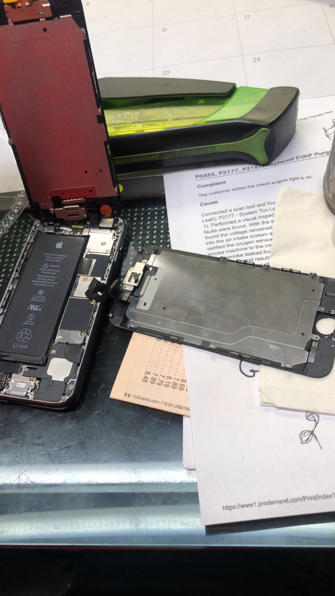
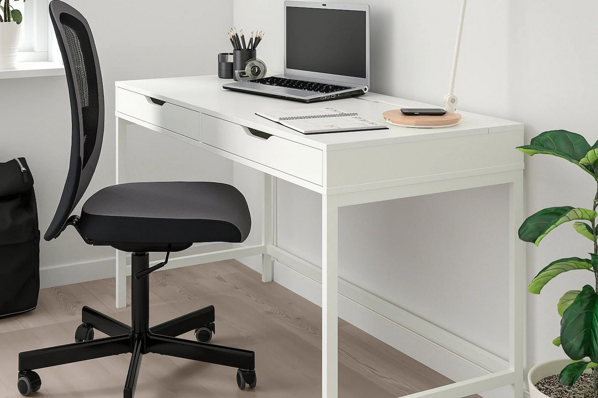

<!DOCTYPE html>
<html lang="en">
	<!-- DEVELOPER: Isaiah Bartlett , IS117-001, fall2020 ->
<head>
     <link rel = "stylesheet" type = "text/css" href="home.css" />
    <meta charset="UTF-8">
    <title>Handy Work</title>
    <link rel="stylesheet"
          href="https://stackpath.bootstrapcdn.com/bootstrap/4.4.1/css/bootstrap.min.css"
          
integrity="sha84-Vkoo8x4CGsO3+Hhxv8T/Q5PaXtkKtu6ug5TOeNV6gBiFeWPGFN9MuhOf23Q9Ifjh"
          crossorigin="anonymous">
    <link href="css/main.css" rel="stylesheet">
        <link rel = "stylesheet" type = "text/css" href="contact.css" />
  
   <nav id="nav_menu"> 
	<ul>   
      
		<li><a href="home.html">Home</a></li>        
		<li><a href="services.html">Services</a>            
			<ul>                
				<li><a href="services.html"> Future services</a></li>                
			           
				<li><a href="sampson.html">Services</a>                    
					<ul>                        
						<li><a href="Car services">Car Services</a></li>                        
						<li><a href="#">Shoe Services</a></li>  
     	       <li><a href="#">Handy Services</a></li>                                
					</ul>                
				</li>                    
			   
			</ul>        
		</li>        
	<li><a href="aboutme.html">About Me</a></li>
	<li class="lastitem"><a href="contact.html">            
		Contact Me</a>                   
		</li>    
	</ul>
 
</nav>


<style>


#nav_menu{
width: 100%;
float: center;
} 

#nav_menu ul {    
	list-style-type: none;    
	position: relative; }
	
#nav_menu ul li {
 float: left; 
 }
 
#nav_menu ul ul {    
	display: none;    
	position: absolute;    
	top: 100%; 
	}

#nav_menu ul ul li {    
	float: none;    
	position: relative; 
	}
	
#nav_menu ul ul li ul {
	position: absolute;
	left: 100%;
	top: 0; }
	
#nav_menu ul li.lastitemul li ul 
	{
	position: absolute;
	left: -100%;
	top: 0;
	}
#nav_menu ul li:hover > ul {
	display: block;
	}
#nav_menu > ul::after 
{
	content: "";    
	clear: both;    
	display: block; 
}
#nav_menu ul {    
	margin: 0;    
	padding: 0; 
	}
	
#nav_menu ul li a {    
	text-align: center;    
	display: block;
	width: 176px;    
	padding: 1em 0;    
	text-decoration: none;    
	background-color: white;    
	color: black;    
	font-weight: bold; 
	}

#nav_menu ul li.lastitem a 
{ 
  position : relative;
  width: 178px;
}

#nav_menu ul li a.current 
{    
color: yellow; 
}

#nav_menu ul li a:hover, #nav_menu ul li a:focus 
{     background-color: gray; }
</head>

<body>

     <style>
          img {
  display: block;
  margin-left: auto;
  margin-right: auto;
  width: 60%;
}
* {box-sizing: border-box;}
body {font-family: Verdana, sans-serif;}
.mySlides {display: none;}
img {vertical-align: middle;}


.slideshow-container {
  max-width: 1000px;
  position: relative;
  margin: auto;
}


.text {
  color: #f2f2f2;
  font-size: 15px;
  padding: 8px 12px;
  position: absolute;
  bottom: 8px;
  width: 100%;
  text-align: center;
}


.numbertext {
  color: #f2f2f2;
  font-size: 12px;
  padding: 8px 12px;
  position: absolute;
  top: 0;
}


.dot {
  height: 15px;
  width: 15px;
  margin: 0 2px;
  background-color: #bbb;
  border-radius: 50%;
  display: inline-block;
  transition: background-color 0.6s ease;
}

.active {
  background-color: #717171;
}

/* Fading animation */
.fade {
  -webkit-animation-name: fade;
  -webkit-animation-duration: 1.5s;
  animation-name: fade;
  animation-duration: 1.5s;
}

@-webkit-keyframes fade {
  from {opacity: .4} 
  to {opacity: 1}
}

@keyframes fade {
  from {opacity: .4} 
  to {opacity: 1}
}

/* On smaller screens, decrease text size */
@media only screen and (max-width: 300px) {
  .text {font-size: 11px}
}
</style>
</head>
<body>

<p> I've been taking apart toys ever since I was able to hold a screw driver. I've built a lot of furniture peices for both relatives and friends. This includes beds, tables, chairs etc. Aside from building I've done a fare share of household maitenance tasks such as shower sealing, toilet replacement and fan wiring. All of these are things that the average person would have to call a professional for, but it is fairly simple to learn with determination and the right tools. The shed in the slideshow was built for one of my neighbors that had a bad back and couldn't complete to project on his own, so he had concrete poured and called me to do the rest.
</p>

<div class="slideshow-container">

<div class="mySlides fade">
  <div class="numbertext">1 / 3</div>
  
  <div class="text"></div>

</div>


<div class="mySlides fade">
  <div class="numbertext">2 / 3</div>
  
  <div class="text"></div>
    
</div>
<div class="mySlides fade">
  <div class="numbertext">3 / 3</div>
  
  <div class="text"></div>
    
</div>
</div>
<br>

<div style="text-align:center">
  <span class="dot"></span> 
  <span class="dot"></span> 
  <span class="dot"></span> 
</div>

<script>
var slideIndex = 0;
showSlides();

function showSlides() {
  var i;
  var slides = document.getElementsByClassName("mySlides");
  var dots = document.getElementsByClassName("dot");
  for (i = 0; i < 3; i++) {
    slides[i].style.display = "none";  
  }
  slideIndex++;
  if (slideIndex > 3) {slideIndex = 1}    
  for (i = 0; i < dots.length; i++) {
    dots[i].className = dots[i].className.replace(" active", "");
  }
  slides[slideIndex-1].style.display = "block";  
  dots[slideIndex-1].className += " active";
  setTimeout(showSlides, 2500); 
}
</script>
</body>
<p> add stuff here</p>
<footer class="footer">
        
                <p>&copy;Isaiah Bartlett 2020 |  <a href="terms.html"> Terms Of Use</a>  |  
 <a href="privacy.html"> Privacy Policy</a></p>
            </div>
        </div>
    </footer>
</div>


<script src="https://code.jquery.com/jquery-3.4.1.slim.min.js"
        
integrity="sha384-J6qa4849blE2+poT4WnyKhv5vZF5SrPo0iEjwBvKU7imGFAV0wwj1yYfoRSJoZ+n"
        crossorigin="anonymous"></script>
<script src="https://cdn.jsdelivr.net/npm/popper.js@1.16.0/dist/umd/popper.min.js"
        
integrity="sha384-Q6E9RHvbIyZFJoft+2mJbHaEWldlvI9IOYy5n3zV9zzTtmI3UksdQRVvoxMfooAo"
        crossorigin="anonymous"></script>
<script src="https://stackpath.bootstrapcdn.com/bootstrap/4.4.1/js/bootstrap.min.js"
        
integrity="sha384-wfSDF2E50Y2D1uUdj0O3uMBJnjuUD4Ih7YwaYd1iqfktj0Uod8GCExl3Og8ifwB6"
        crossorigin="anonymous"></script>
</body>
</html>
